濫觴
台灣的含糖飲料歷史，可以追溯到清代以前。早期由於氣候炎熱，人們便開始利用本地盛產的植物、水果及糖類製作各種消暑飲品，其中最具代表性的包括仙草、冬瓜茶、甘蔗汁以及糖水。這些傳統飲料不僅陪伴台灣人的日常生活，也奠定了往後飲料文化發展的重要基礎。
從清代傳統糖飲，到現代手搖飲文化的發展歷程
作者:陳南年、楊順宇台灣的含糖飲料歷史，可以追溯到清代以前。早期由於氣候炎熱，人們便開始利用本地盛產的植物、水果及糖類製作各種消暑飲品，其中最具代表性的包括仙草、冬瓜茶、甘蔗汁以及糖水。這些傳統飲料不僅陪伴台灣人的日常生活，也奠定了往後飲料文化發展的重要基礎。
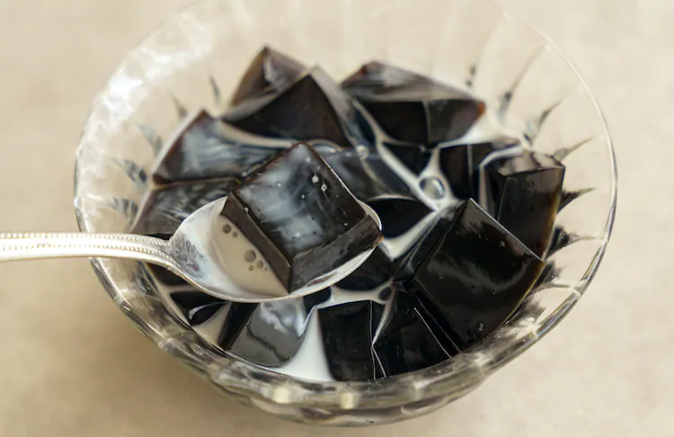
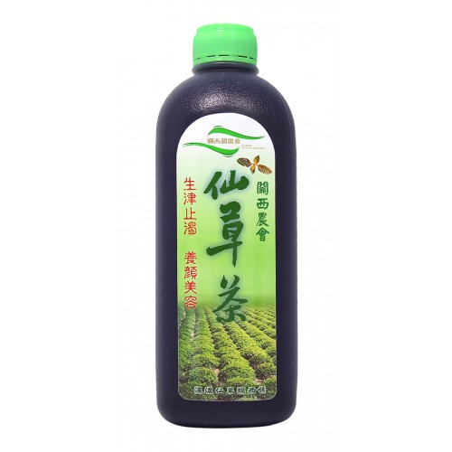
早在1685年的《臺灣府志》中，便已有仙草的相關記載，提到將仙草曬乾後煮爛、絞汁去渣，再與粉漿一起熬煮，可製成仙草凍，並加入糖水飲用，具有消暑解熱的效果。
1720年的《臺灣縣志》與1747年的《重修臺灣府志》也都有相似記錄，可見清領前期的台灣居民已十分熟悉仙草的食用方式。
從清代一路發展至日治時期，仙草始終都是台灣最受歡迎的傳統消暑飲品之一。
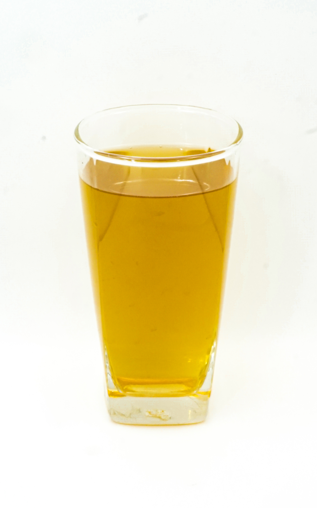
1717年的《諸羅縣志》便記載了將冬瓜切片後加入糖熬煮作為茶飲的方法，可見冬瓜茶已有三百年以上的歷史。
相傳清同治年間，台灣南部安平、西港一帶的瓜農為了保存盛產的冬瓜，開始將冬瓜加入砂糖長時間熬煮，製成可以長期保存的濃縮糖漿，也就是冬瓜茶最早的雛形。
到了日本時代，商人廖毛進一步整理並改良冬瓜茶的配方，成立商號販售，並將製作技術傳承給徒弟，使冬瓜茶逐漸走向商業化，成為今日廣受歡迎的台灣特色飲品。
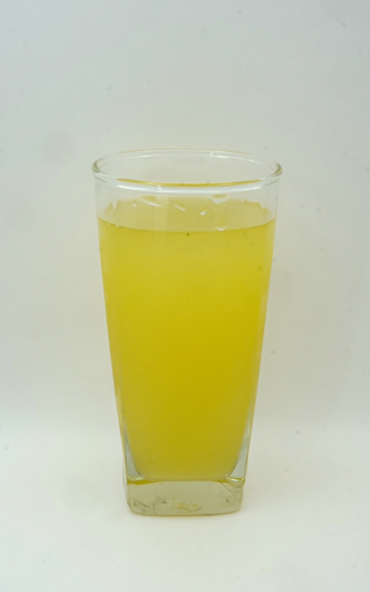
根據文字記載推論，台灣可能早在元代便已有甘蔗種植紀錄，但由於文獻中的「琉球」究竟是否指台灣，至今仍存在爭議。
1836年前後，多部台灣地方志均記錄了甘蔗的栽培情形。自17世紀開始，甘蔗逐漸成為台灣重要的經濟作物，而甘蔗汁也隨之成為常見的消暑飲品。
傳統上，甘蔗汁被認為具有清熱、生津止渴等功效，因此深受民眾喜愛。除了直接飲用之外，現今也常搭配檸檬、牛奶等不同配料，在手搖飲盛行的時代仍然保有一席之地。
碳酸飲料與彈珠汽水開始傳入臺灣，飲料文化邁入新的時代。
日治時期以前，臺灣已經有許多消暑飲料，其中較常見的包括仙草、愛玉子、米苔目、粉圓、杏仁茶、涼粉條等。這些大多加入糖水調製，不僅能補充水分，也能作為點心補充熱量。
除了上述食品外，也有單純以糖水製成的飲品，例如「酸水」與「冰清水」。前者是以含有糖蜜的砂糖沖泡，帶有微酸風味；後者則是以冰糖沖泡而成。
在日治初期以前，臺灣人所飲用的甜飲多以天然食材與糖水調製為主，碳酸飲料尚未普及，直到日本統治時期，新式汽水文化才逐漸傳入臺灣。碳酸飲料最早可追溯至古羅馬時期，當時主要作為醫療用途。到了十九世紀，隨著歐美飲食文化的改變，逐漸演變成廣受歡迎的休閒飲品。之後又隨著帝國主義的擴張傳入日本，並由原本僅供外國人飲用的商品，逐漸普及至日本一般民眾。其中，以彈珠汽水（Ramune）最早出現，也最受到歡迎，後續各式碳酸飲料陸續被開發，種類日益豐富。
1895年日本開始統治臺灣後，碳酸飲料與彈珠汽水也隨之傳入臺灣，開啟了臺灣汽水產業的新時代。
宜蘭蘇澳冷泉富含天然二氧化碳，早期由於泉水中幾乎沒有生物生存，居民誤以為泉水有毒，因此鮮少有人接近。
直到日治時期，日本軍人竹中信景行軍至蘇澳時，因口渴飲用了冷泉，發現泉水冰涼甘甜、十分爽口。退伍後，他投入冷泉研究，證實泉水並無毒性，並利用冷泉天然含有二氧化碳的特性，在七星山下設立臺灣第一家汽水工廠。
利用蘇澳冷泉的天然碳酸水，再加入糖與香料所製成的彈珠汽水，以日語音譯命名為「那姆內（Ramune）」，很快便在臺灣打響知名度，也象徵臺灣汽水製造產業正式誕生。
日治時期，市面上的汽水依照生產來源，大致可分為三種等級：
談到臺灣本土汽水品牌，最具代表性的莫過於黑松。黑松成立於1925年，創立初期以「富士牌」汽水及「三手牌」彈珠汽水作為商標，直到1931年正式更名為今日大家熟悉的「黑松牌」。
由於黑松屬於臺灣人經營的企業，因此當時被歸類為「三流汽水」。除了要面對日本品牌的競爭與市場壓力之外，本土汽水業者還必須向日本購買設備、學習生產技術，加上當時十多家本土汽水工廠彼此削價競爭，使許多汽水廠最終倒閉。
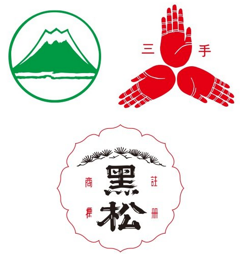
黑松公司早期曾使用「富士牌」與「三手牌」作為商標，1931年正式改用「黑松牌」，並一路沿用至今，成為臺灣歷史最悠久、最具代表性的飲料品牌之一。
第二次世界大戰結束後，臺灣的汽水工廠因缺乏糖、二氧化碳及各種生產原料，多數被迫停工，整體飲料產業一度陷入低潮。
根據林全福經營的「臺南飲料水製造株式會社」1945年《第七回營業報告書》統計，該公司當年共生產各類飲料約467萬瓶，其中因碳酸原料不足，彈珠汽水僅生產38,432瓶；相較之下，產量最高的是俗稱「三水」的蜜柑水，高達311萬餘瓶，可見當時汽水生產仍受到戰後環境限制。
經過兩年的重建，1947年成立的「臺中市飲料汽水工業同業公會」已有十六家工廠加入；同年成立的「臺南市汽水商業同業公會」也擁有十六家會員工廠，其中便包括林全福經營的臺南汽水製造工廠。這些紀錄顯示，臺灣汽水工業已逐步走出戰爭陰影，重新恢復發展。
進入1950年代後，臺灣碳酸飲料產業開始快速成長。其中最具代表性的品牌便是黑松。黑松前身「進馨商會」成立於1925年，1931年推出黑松汽水，而真正奠定品牌地位的代表性產品──黑松沙士，則是在1950年正式上市。
1956年，黑松獲得「美援相對基金」貸款，自日本引進每分鐘可生產120瓶汽水的全自動生產設備，大幅提升生產效率。同一年，黑松汽水年銷售量首次突破100萬打，成為臺灣飲料產業的重要里程碑。
除了黑松之外，當時市場上還有七星、白鹿、白梅、菊水、綠島等知名汽水品牌。其中白梅汽水由南亞食品公司生產，而菊水汽水則是掬水軒旗下的重要產品，共同構成1950年代臺灣多元的汽水市場。
1950年代韓戰爆發後，美國軍事顧問團進駐臺灣協防，美軍喜愛的可口可樂也透過臺灣貿易公司引進臺灣。不過，當時僅限於免稅供應駐臺美軍飲用，一般民眾並無法合法購買。
雖然可口可樂早在1951年便已進口臺灣，但直到1967年才正式開放於本地市場販售。在禁售期間，可口可樂仍透過黑市、特殊管道流入民間，甚至部分政府高層及具有特殊身分者，也能以非正式方式取得飲用。
1960年代，臺灣本土汽水市場已逐漸成熟，消費需求持續增加，也吸引國外飲料企業看好臺灣市場的發展潛力。
美國飲料公司與菲律賓華僑合作，配合政府鼓勵華僑返臺投資的政策，於1963年成立「大西洋飲料公司」，並在1965年推出以「蘋果西打」為品牌名稱的碳酸飲料，正式進軍臺灣市場，也揭開了本土品牌與國際品牌競爭的序幕。
1966年，在美國政府持續施壓下，美商皇冠可樂（Royal Crown Cola）與國軍退除役官兵輔導委員會合作，在臺推出「榮冠果樂（RC Cola）」。
除了經典可樂口味之外，榮冠果樂也推出蘋果、葡萄、檸檬、桔子、麥根及薑水等多種風味，提供消費者更多元的選擇。
當時許多駐臺美軍十分喜愛這款帶有家鄉味的汽水，但隨著美軍陸續撤離臺灣，榮冠果樂的市場需求也逐漸下降，最終淡出臺灣市場。
相較於RC Cola，可口可樂採取不同的市場策略。首先透過臺灣貿易公司將中美汽水廠轉售給國人經營，並更名為「臺灣汽水廠」。之後，可口可樂董事長 James Farley 憑藉其政界背景，親自致信蔣中正總統並爭取會面，希望促成可口可樂正式進入臺灣市場。
然而，國內汽水業者普遍擔心國際品牌將衝擊本土市場，因此向經濟部表示當時國內已有130多家汽水工廠，若可口可樂正式上市，恐怕影響本土業者的生存。
最終，可口可樂於1968年正式在臺上市。黑松、掬水軒、南亞食品等六家本土飲料公司共同投資，總投資金額約300萬元，占股份20%，雖未達原先規劃的40%，仍象徵本土與國際品牌開始合作發展。
繼可口可樂之後，美國另一大品牌「百事可樂（Pepsi）」也採取相似模式，於1970年正式進入臺灣市場，形成可口可樂、百事可樂與本土品牌共同競爭的新局面。
1960年代開始，國際品牌陸續進軍臺灣，本土汽水業迎來激烈競爭，也開啟臺灣飲料市場的新篇章。
1960年代，臺灣本土汽水市場已逐漸成熟，消費需求持續增加，也吸引國外飲料企業看好臺灣市場的發展潛力。
美國飲料公司與菲律賓華僑合作，配合政府鼓勵華僑返臺投資的政策，於1963年成立「大西洋飲料公司」，並在1965年推出以「蘋果西打」為品牌名稱的碳酸飲料，正式進軍臺灣市場，也揭開了本土品牌與國際品牌競爭的序幕。
1966年，在美國政府持續施壓下，美商皇冠可樂（Royal Crown Cola）與國軍退除役官兵輔導委員會合作，在臺推出「榮冠果樂（RC Cola）」。
除了經典可樂口味之外，榮冠果樂也推出蘋果、葡萄、檸檬、桔子、麥根及薑水等多種風味，提供消費者更多元的選擇。
當時許多駐臺美軍十分喜愛這款帶有家鄉味的汽水，但隨著美軍陸續撤離臺灣，榮冠果樂的市場需求也逐漸下降，最終淡出臺灣市場。
相較於RC Cola，可口可樂採取不同的市場策略。首先透過臺灣貿易公司將中美汽水廠轉售給國人經營，並更名為「臺灣汽水廠」。之後，可口可樂董事長 James Farley 憑藉其政界背景，親自致信蔣中正總統並爭取會面，希望促成可口可樂正式進入臺灣市場。
然而，國內汽水業者普遍擔心國際品牌將衝擊本土市場，因此向經濟部表示當時國內已有130多家汽水工廠，若可口可樂正式上市，恐怕影響本土業者的生存。
最終，可口可樂於1968年正式在臺上市。黑松、掬水軒、南亞食品等六家本土飲料公司共同投資，總投資金額約300萬元，占股份20%，雖未達原先規劃的40%，仍象徵本土與國際品牌開始合作發展。
繼可口可樂之後，美國另一大品牌「百事可樂（Pepsi）」也採取相似模式，於1970年正式進入臺灣市場，形成可口可樂、百事可樂與本土品牌共同競爭的新局面。
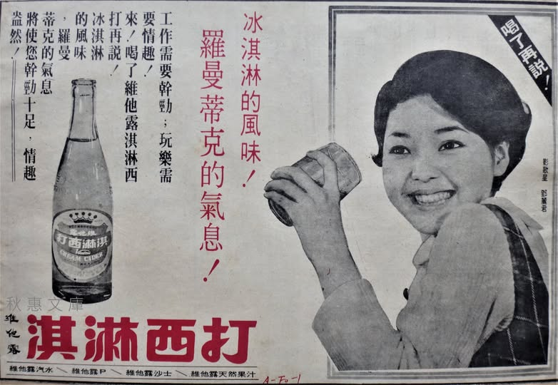
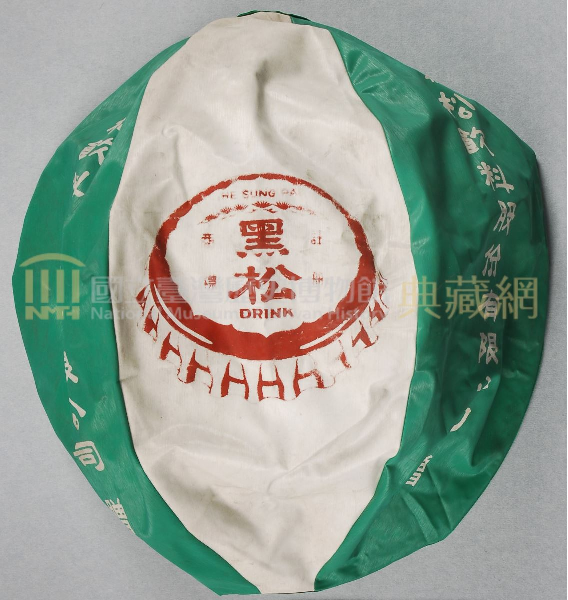
▲ 當時鄧麗君代言的汽水廣告，以及印有汽水廣告的海灘球。
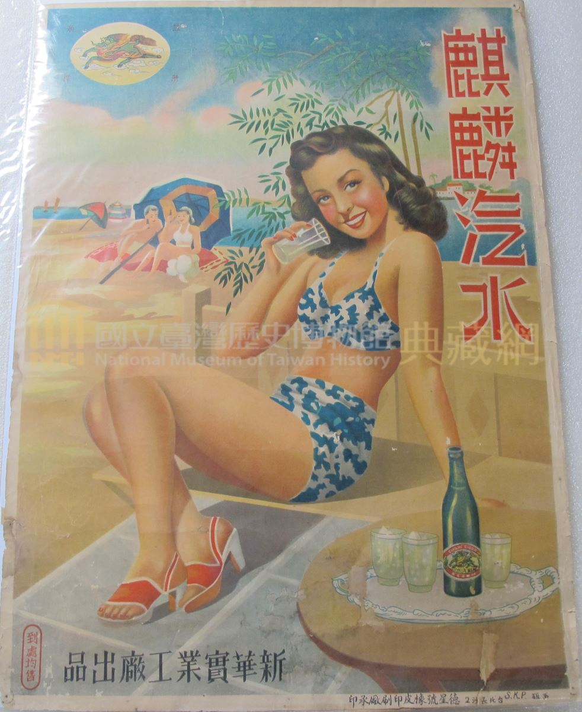
▲ 麒麟汽水廣告海報。
當時無論是報章雜誌上的彩色廣告、雜貨店懸掛的廣告鐵牌、辦桌宴席使用的棚布、路邊招牌，甚至廟會活動中的旗幟與汽水瓶造型紙偶，都成為各家汽水品牌競相宣傳的重要媒介，也反映出1960至1970年代臺灣汽水市場競爭的激烈程度。
1980年代後，隨著果汁、運動飲料及咖啡等新品項快速興起，碳酸飲料逐漸失去飲料市場龍頭的地位。
1990年代開始，茶飲文化快速發展，街頭陸續出現手搖飲料店，各式瓶裝茶飲也成為消費者的新選擇，臺灣飲料市場正式邁入以茶飲為主流的時代。
即使如此，碳酸飲料並未退出市場。根據2003年臺灣飲料市場銷售統計，茶飲以32%的市占率排名第一，碳酸飲料則以17%位居第二，果汁類占15%排名第三，顯示汽水仍然是臺灣民眾喜愛的重要飲品之一。
清代的臺灣，飲茶主要盛行於中上階層家庭。除了清末因茶葉產業興盛，使北部地區逐漸形成較普遍的飲茶文化之外，一般民眾平時較少將茶作為日常飲品。
直到1980年代初，臺灣茶飲文化開始出現重大轉變。春水堂創辦人劉漢介受到日本冰咖啡的啟發，嘗試在紅茶中加入冰塊，以雪克杯充分搖晃，讓茶湯產生細緻綿密的泡沫，再加入果糖調味，成功創造出全新的飲品——泡沫紅茶。
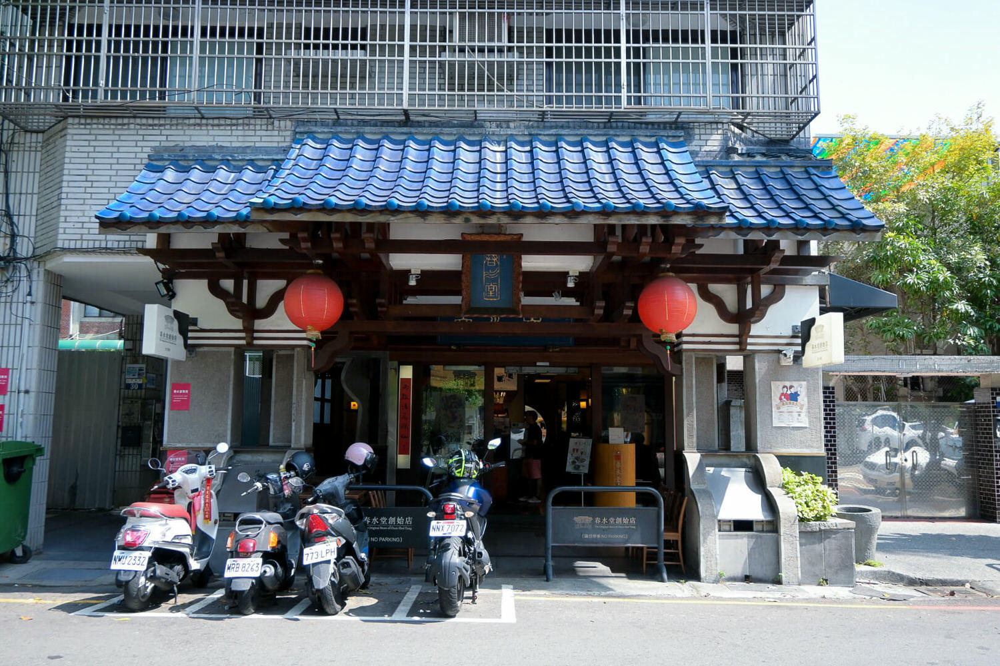
▲位於台中的春水堂創始店
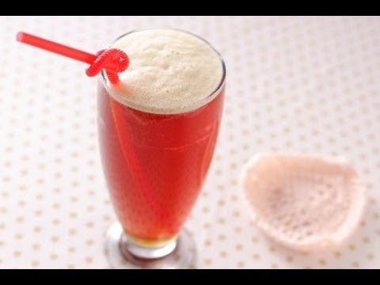
▲ 泡沫紅茶的誕生，開啟了臺灣手搖飲文化的新時代。1986年，春水堂進一步將粉圓與牛奶加入泡沫紅茶中，研發出今日聞名世界的珍珠奶茶，並於1987年正式上市。這項創新不僅改變了臺灣人的飲茶方式，也讓珍珠奶茶成為臺灣最具代表性的飲品之一，逐漸走向國際市場。

▲ 珍珠奶茶已成為臺灣最具代表性的特色飲品之一。
1990年代，泡沫紅茶店快速發展，外帶式手搖飲店開始遍布臺灣各地。「休閒小站」、「快可立」、「葵可利」等品牌相繼成立，不僅讓消費者能夠輕鬆購買現調飲品，也奠定了現代手搖飲產業的發展基礎。
手搖飲能夠快速普及，除了飲品本身的創新之外，另一項重要的發明便是飲料封口機。
1984年，葉益芳先生觀察到民眾端著飲料或湯品行走時，內容物容易灑出，因此投入封口機的研發。成功量產後，塑膠封膜逐漸取代傳統杯蓋，使飲料更方便攜帶，也降低外漏的情況，大幅提升外帶飲料的便利性。
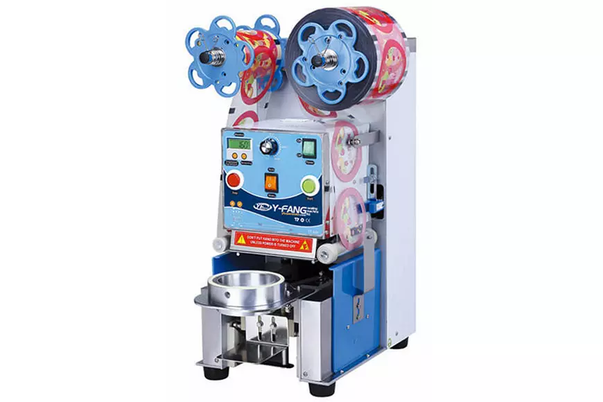
▲ 飲料封口機的發明，成為臺灣手搖飲產業發展的重要里程碑。
1983年（民國72年），當時任職於統一企業的郭經理前往臺中縣拜訪友人，在交流過程中得到一個寶貴的建議。當時許多家庭都有自行煮紅茶飲用的習慣，若在紅茶中加入焙炒大麥，不僅能增添香氣、降低茶澀味，還具有退火解膩的特色。
統一企業結合自身的飲料研發技術，並採用當時相當先進的鋁箔包裝，不僅提升產品的衛生品質，也增加攜帶上的便利性。產品上市後深受消費者喜愛，成為臺灣長銷飲料之一，「麥香，人情味更香」更成為許多人耳熟能詳的經典廣告詞。
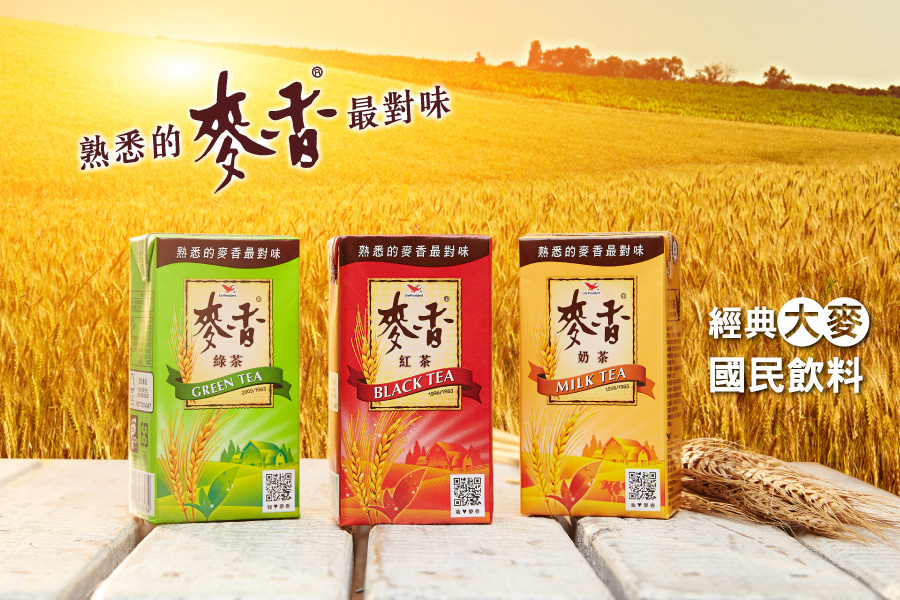
▲ 麥香茶系列上市後，成為臺灣最具代表性的鋁箔包裝茶飲之一。
進入2000年後，隨著飲料封口機普及以及加盟制度日益成熟，傳統泡沫紅茶店逐漸被成本較低、經營模式更完善的連鎖手搖飲品牌取代。由於加盟門檻相對親民，加上各大品牌快速展店，使臺灣手搖飲市場進入高度競爭的時代。
約在2000年代，健康意識逐漸抬頭，為回應消費者對含糖飲料的疑慮，許多手搖飲店開始提供甜度與冰塊的客製化選項。從全糖、半糖、微糖到無糖，以及正常冰、少冰、微冰、去冰等不同搭配，讓每位消費者都能依照自己的喜好調整飲品，也逐漸成為臺灣手搖飲文化的重要特色。
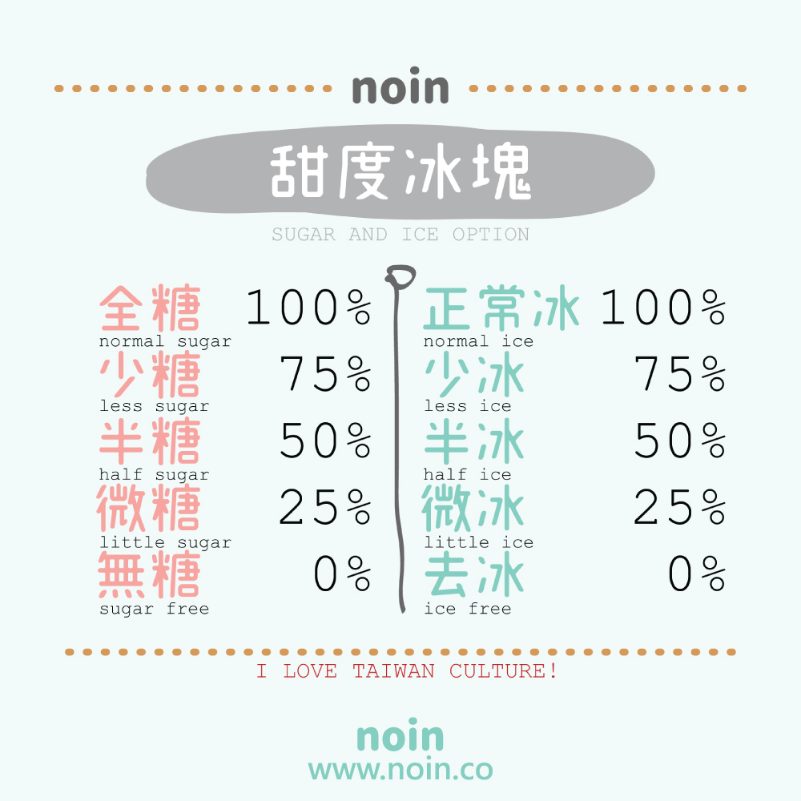
▲ 客製化甜度與冰量已成為臺灣手搖飲文化的重要特色。
近年來，手搖飲市場的競爭已不再侷限於飲品本身，各品牌紛紛投入行銷宣傳，透過邀請藝人、網紅及知名團體代言，推出聯名商品、期間限定飲品及打卡拍照空間，希望提升品牌知名度並吸引更多年輕消費族群。
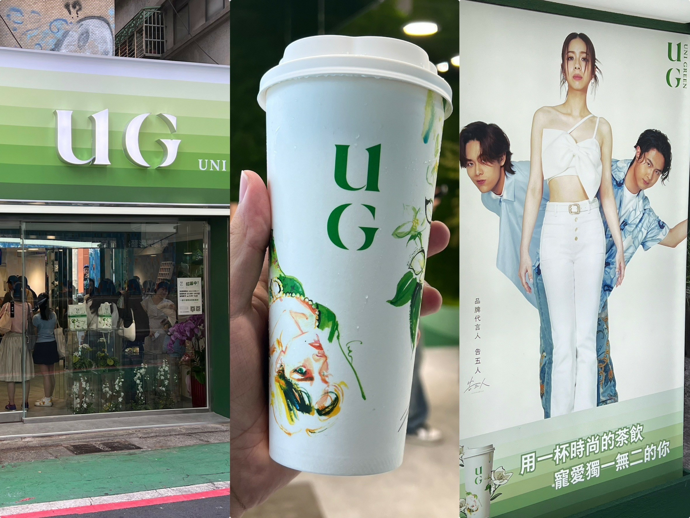
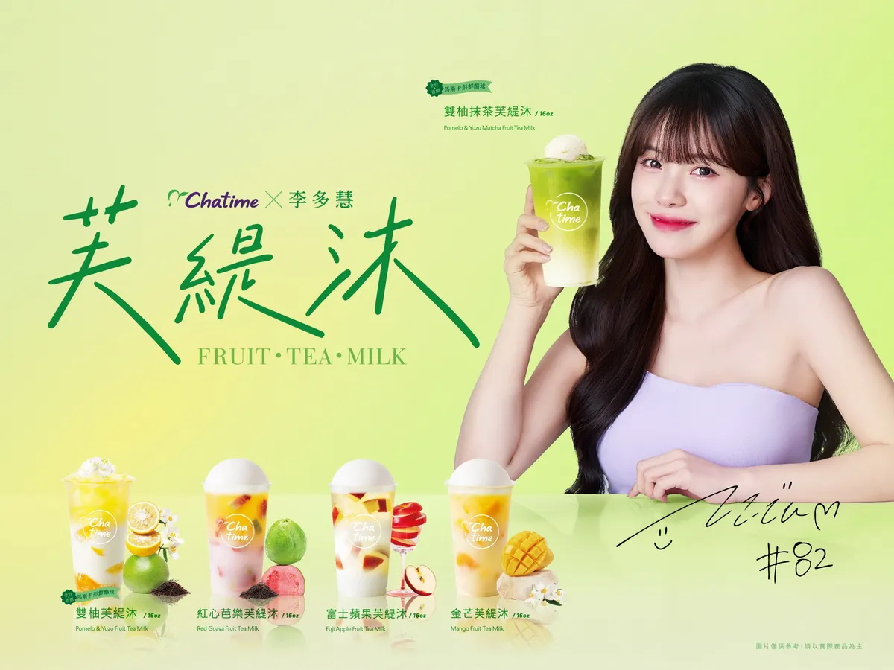
▲ 左：知名樂團告五人代言的手搖飲品牌「UG」。
▲ 右：知名啦啦隊成員李多慧代言的「日出茶太 Chatime」。